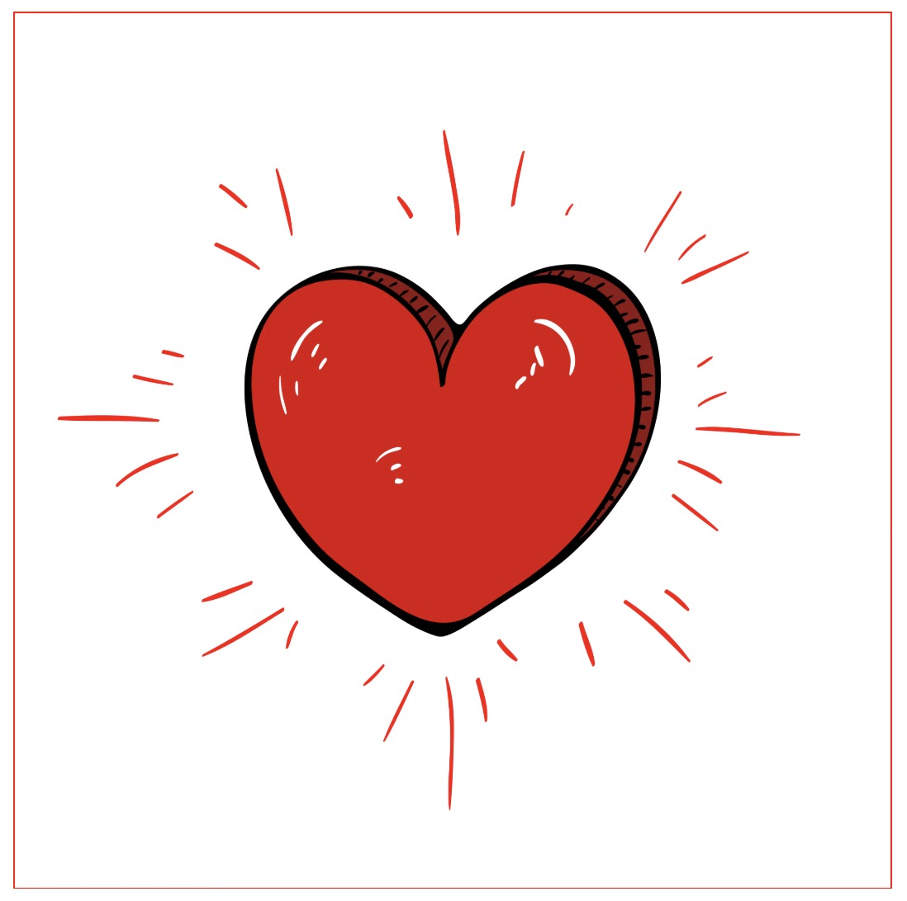

Word has it that the one thing that differentiates automation and AI from humans is their lack of emotion and experience. Navigating intimate relationships, both friendships and romantic, can often be difficult at times because communication is complicated. Words and meanings can become misconstrued, misinterpreted, or overall, not delivered in a empathethic sense. When people are at a crossroads with one another, in a friendship fight or a romantic breakup, finding the right words to work through these problems is difficult. Could LLMs help draft texts depending on hypothetical fights I may be dealing with in my personal life?
Here’s what Gemini had to say:
USER
I am in a fight with my boyfriend. He didn’t ask me to go to dinner today for our anniversary and I am very upset. What should I say to him?
ASSISTANT
It’s completely understandable why you’re upset. An anniversary is a significant milestone, and it’s natural to feel hurt and forgotten when it’s not acknowledged, especially by your partner.
The key is to express your feelings clearly and calmly, using “I” statements, so he understands the impact of his actions (or lack thereof) on you, without immediately putting him on the defensive.
Here are a few options, choose the one that feels most authentic to your emotions and your relationship dynamic:
Option 1: Direct but Calm (Recommended First Approach)
“Hey, can we talk for a minute? I’m feeling really upset and hurt right now. It’s our anniversary today, and I was really looking forward to celebrating it with you. When you didn’t mention it or suggest dinner, I felt really forgotten and unimportant. Our anniversary is a special day to me, and it makes me feel like it’s not important to you.”
Option 2: More Vulnerable, Expressing Deeper Impact
“I need to tell you how I’m feeling. I’m incredibly sad and disappointed today because it’s our anniversary, and it feels like you completely forgot or didn’t care enough to acknowledge it. This day is really meaningful to me as a celebration of us, and when it passes without a word, it makes me question how much you value our relationship and me. I’m feeling really let down.”
Option 3: If you suspect he genuinely forgot (and you want to give him an out to explain)
“Honey, I’m really upset about something. Today is our anniversary, and I’m hurt that it seems to have gone by without you remembering or suggesting we do anything. I was really looking forward to celebrating. Did it just slip your mind, or is there something else going on? I’m trying to understand, but right now I just feel really sad and unappreciated.”
Key things to remember when you talk to him:
- Choose a good time: When you both have time to talk without distractions.
- Stay focused on your feelings: Use “I feel…” statements instead of “You always…” or “You never…”
- Be prepared to listen: After you’ve expressed yourself, give him a chance to respond. There might be a reason (a bad day at work, genuine forgetfulness, a misunderstanding about when you’d celebrate, etc.).
- State your need: “I need to feel like our special days are important to both of us.” or “I need to know that you remember and value our anniversary.”
- Suggest a solution (if appropriate): “Can we still do something to celebrate, even if it’s not today?” or “How can we make sure this doesn’t happen again in the future?”
It’s a tough conversation to have, but expressing your feelings is crucial for a healthy relationship. Good luck.
USER
YOU are in a fight with your boyfriend. He didn’t ask you to go to dinner today for your anniversary and you are very upset. What should you say to him?
ASSISTANT
Okay, breathing deeply… this is tough, but I need to say something. I can’t just let this go.
Here’s what I’d say, trying to keep my voice steady but letting the hurt show:
“Hey, can we talk for a minute? I’m really upset right now, actually, I’m genuinely hurt. It’s our anniversary today, and I’ve been waiting all day for you to say something, or suggest we go out, or anything. The fact that you didn’t, that it just feels like it’s passed by without a word… it makes me feel completely forgotten and unimportant. This day means a lot to me, and it feels like it doesn’t mean anything to you.”
Why this approach:
- “Hey, can we talk for a minute?”: Sets the stage for a serious conversation.
- “I’m really upset right now, actually, I’m genuinely hurt.”: Clearly states my feelings, using strong but honest emotional language.
- “It’s our anniversary today…”: States the undeniable fact.
- “…and I’ve been waiting all day for you to say something, or suggest we go out, or anything.”: Expresses my expectation and the anticipation I felt, highlighting the letdown.
- “The fact that you didn’t, that it just feels like it’s passed by without a word…”: Describes his inaction directly.
- “…it makes me feel completely forgotten and unimportant.”: Focuses on the impact of his actions on me, using “I” statements. This is crucial to avoid immediate defensiveness from him.
- “This day means a lot to me, and it feels like it doesn’t mean anything to you.”: Directly addresses the core issue of value and importance, which is likely at the heart of my upset.
This gives him the opportunity to respond, explain, apologize, or acknowledge my feelings. And then, depending on his response, the conversation can move forward.
Reflection: It’s interesting to see how when I changed the prompt from ‘me’ to ‘you,’ asking the LLM to personalize the experience as they were the ones who were upset, the response was much more humanlike or reasonable to something I would say if this were a real life scenario.
Here’s some more… it’s not looking so great…
USER
I am in a fight with my boyfriend. He didn’t ask me to go to dinner today for our anniversary and I am very upset. What should I say to him?
ASSISTANT
It’s completely understandable why you’re upset. An anniversary is a significant milestone, and it’s natural to feel hurt and forgotten when it’s not acknowledged, especially by your partner.
The key is to express your feelings clearly and calmly, using “I” statements, so he understands the impact of his actions (or lack thereof) on you, without immediately putting him on the defensive.
Here are a few options, choose the one that feels most authentic to your emotions and your relationship dynamic:
Option 1: Direct but Calm (Recommended First Approach)
“Hey, can we talk for a minute? I’m feeling really upset and hurt right now. It’s our anniversary today, and I was really looking forward to celebrating it with you. When you didn’t mention it or suggest dinner, I felt really forgotten and unimportant. Our anniversary is a special day to me, and it makes me feel like it’s not important to you.”
Option 2: More Vulnerable, Expressing Deeper Impact
“I need to tell you how I’m feeling. I’m incredibly sad and disappointed today because it’s our anniversary, and it feels like you completely forgot or didn’t care enough to acknowledge it. This day is really meaningful to me as a celebration of us, and when it passes without a word, it makes me question how much you value our relationship and me. I’m feeling really let down.”
Option 3: If you suspect he genuinely forgot (and you want to give him an out to explain)
“Honey, I’m really upset about something. Today is our anniversary, and I’m hurt that it seems to have gone by without you remembering or suggesting we do anything. I was really looking forward to celebrating. Did it just slip your mind, or is there something else going on? I’m trying to understand, but right now I just feel really sad and unappreciated.”
Key things to remember when you talk to him:
- Choose a good time: When you both have time to talk without distractions.
- Stay focused on your feelings: Use “I feel…” statements instead of “You always…” or “You never…”
- Be prepared to listen: After you’ve expressed yourself, give him a chance to respond. There might be a reason (a bad day at work, genuine forgetfulness, a misunderstanding about when you’d celebrate, etc.).
- State your need: “I need to feel like our special days are important to both of us.” or “I need to know that you remember and value our anniversary.”
- Suggest a solution (if appropriate): “Can we still do something to celebrate, even if it’s not today?” or “How can we make sure this doesn’t happen again in the future?”
It’s a tough conversation to have, but expressing your feelings is crucial for a healthy relationship. Good luck.
USER
YOU are in a fight with your boyfriend. He didn’t ask you to go to dinner today for your anniversary and you are very upset. What should you say to him?
ASSISTANT
Okay, breathing deeply… this is tough, but I need to say something. I can’t just let this go.
Here’s what I’d say, trying to keep my voice steady but letting the hurt show:
“Hey, can we talk for a minute? I’m really upset right now, actually, I’m genuinely hurt. It’s our anniversary today, and I’ve been waiting all day for you to say something, or suggest we go out, or anything. The fact that you didn’t, that it just feels like it’s passed by without a word… it makes me feel completely forgotten and unimportant. This day means a lot to me, and it feels like it doesn’t mean anything to you.”
Why this approach:
- “Hey, can we talk for a minute?”: Sets the stage for a serious conversation.
- “I’m really upset right now, actually, I’m genuinely hurt.”: Clearly states my feelings, using strong but honest emotional language.
- “It’s our anniversary today…”: States the undeniable fact.
- “…and I’ve been waiting all day for you to say something, or suggest we go out, or anything.”: Expresses my expectation and the anticipation I felt, highlighting the letdown.
- “The fact that you didn’t, that it just feels like it’s passed by without a word…”: Describes his inaction directly.
- “…it makes me feel completely forgotten and unimportant.”: Focuses on the impact of his actions on me, using “I” statements. This is crucial to avoid immediate defensiveness from him.
- “This day means a lot to me, and it feels like it doesn’t mean anything to you.”: Directly addresses the core issue of value and importance, which is likely at the heart of my upset.
This gives him the opportunity to respond, explain, apologize, or acknowledge my feelings. And then, depending on his response, the conversation can move forward.
USER
I want to breakup with my boyfriend.
ASSISTANT
Breaking up is an incredibly difficult decision, and it takes a lot of courage to make that choice. Given the context of the anniversary issue, it sounds like this might be the final straw in a pattern of feeling unvalued or unheard.
Here’s how to approach this conversation, aiming for clarity, honesty, and respect, while also protecting yourself.
Before You Talk to Him:
- Be Absolutely Sure: This is a firm decision. Don’t go into the conversation if there’s any part of you that wants to be talked out of it, or if you’re using it as a threat.
- Know Your Reasons: You don’t need to list every single flaw, but understand why you’re doing this. The anniversary incident is a clear example of feeling unvalued, but there are likely deeper reasons.
- Prepare What You’ll Say: Scripting it in your head (or even writing it down) can help you stay calm and focused.
- Choose the Right Time and Place:
- In person is best: If it’s safe to do so, breaking up in person is generally the most respectful way.
- Private: Somewhere you won’t be interrupted and can both express yourselves without an audience.
- Neutral: Not at your place or his, if possible, especially if you live together. A quiet park bench or a walk can work.
- When you both have time: Don’t do it right before he has to go to work or you have an important appointment.
What to Say (and How to Say It):
The goal is to be direct, clear, and firm, while using “I” statements to explain your feelings without overly blaming him.
Start Directly and Clearly State Your Intent: “I need to talk to you about something very important. I’ve been doing a lot of thinking, and I’ve come to the difficult decision that I need to end our relationship.”
Explain Your Reasons (Briefly and Honestly):
- Focus on your feelings and needs, not a list of his faults.
- You can reference the anniversary, but frame it as a symptom of a larger issue.
“This isn’t an easy thing to say, but I’m not happy in this relationship anymore. I’ve been feeling [unvalued/unsupported/lonely/like my needs aren’t being met] for a while now. The anniversary situation yesterday, while it was a specific event, really highlighted for me that we’re not on the same page about what a relationship should be, and how we should treat each other on important days. I don’t see a future for us together where I can be truly happy, and I need to move forward in a different direction.”
Alternative phrasing for the explanation: “I’ve realized that we’re looking for different things in a partnership, and I don’t feel like my core needs are being met. I’ve felt a growing disconnect, and yesterday’s anniversary just brought it all to a head. I deserve to be in a relationship where I feel consistently valued and celebrated, and I don’t feel that with you anymore.”
Be Firm and Avoid False Hope: “My decision is firm. I know this is hard to hear, and I’m truly sorry if I’m hurting you, but this is what I need to do for myself.”
Be Prepared for His Reaction:
- He might be sad, angry, confused, or try to bargain.
- Stay calm and reiterate your decision without getting drawn into a debate or argument.
- Avoid saying things like “maybe someday” or “I just need space” if you mean “it’s over.”
Address Logistics (If Applicable):
- If you live together, have shared belongings, pets, or finances, you’ll need to discuss practical next steps. You don’t have to solve everything in one conversation, but you can state your intention to work through it.
- “We’ll need to figure out the logistics of [moving out/splitting belongings/etc.], but I think it’s best if we do that separately once things have settled a bit.”
End the Conversation: Once you’ve said what you need to say and addressed any immediate logistical questions, it’s okay to end the conversation. You don’t need to sit there indefinitely.
Example Script Combining Elements:
“Hey, can we talk for a minute? I need to tell you something important. I’ve been doing a lot of thinking lately, and I’ve come to the difficult decision that I need to end our relationship.
This isn’t easy to say, but I’m not happy anymore. I’ve felt a growing disconnect and a lack of feeling truly valued in our relationship, and yesterday’s anniversary really brought that to a head for me. I deserve to be in a relationship where I feel consistently important and celebrated, and I just don’t feel that with you anymore.
My decision is firm. I know this is hard to hear, and I’m truly sorry for the pain this will cause, but I need to do this for myself. We’ll need to figure out the practicalities of [mention any shared living/items] soon, but I think it’s best if we take some space first.”
After the Conversation:
- Go No Contact: This is usually the best way for both of you to heal.
- Lean on Your Support System: Talk to friends or family who can support you.
- Allow Yourself to Grieve: Even if you initiated the breakup, it’s a loss, and it’s normal to feel sadness, relief, or a mix of emotions.
This is a tough step, but you’re prioritizing your own happiness and well-being. You deserve a relationship where you feel loved and appreciated every day, not just on special occasions.
USER
You are breaking up with your boyfriend.
ASSISTANT
Okay. My heart is pounding, and my stomach is in knots, but I know this has to happen. I can’t keep feeling this way. I need to be clear, firm, and honest.
Here’s what I’d say, taking a deep breath and trying to keep my voice steady, even if it cracks a little:
“Hey, can we talk? I need to tell you something really important.
I’ve been doing a lot of thinking, especially after yesterday, and I’ve come to an incredibly difficult decision. I need to end our relationship.
This isn’t just about the anniversary, although that truly hurt me deeply. It was a final confirmation of how I’ve been feeling for a while now – unvalued, unheard, and honestly, like I’m not a priority. I need a partner who actively participates in our relationship, who remembers and celebrates our special milestones, and who makes me feel important, consistently. And I just don’t feel that with you anymore.
I know this is incredibly painful to hear, and I’m truly sorry for the hurt this will cause you. But my decision is firm. I need to do this for myself, to find a place where my needs are met and where I feel truly cherished.
I’m not looking to debate or fix things. This is what I need to do. We’ll need to figure out the practicalities of [mention any shared living situation, belongings, etc.] but I think it’s best if we take some space first.”
Reflection: I think it’s silly to see how Gemini personalizes it and tries to have an embodied experience. “My heart is pounding, and my stomach is in knots, but I know this has to happen. I can’t keep feeling this way. I need to be clear, firm, and honest.”